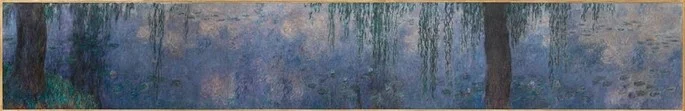

|  | ||
|
Serie Nenúfares: Mañana con sauces. Alrededor de 1915-1926. Óleo sobre lienzo. Sala 2, muro norte. L' Orangerie, París. |
| 1 | 2 | 3 | 4 | 5 | 6 |
|
Estas panorámicas de Monet desde lo alto, prácticamente fuera de unos límites espaciales precisos, de la superficie del estanque y de lo que se percibe a través de ella, se trocan en trémulas e impalpables veladuras de color. El mundo natural se diluye en configuraciones casi abstractas de una luz y una atmósfera vibrantes. Las implicaciones de estos cuadros eran, de hecho, tan radicales como las de Picasso... |